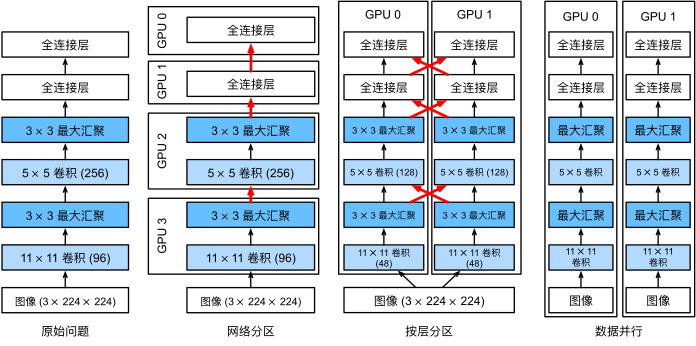
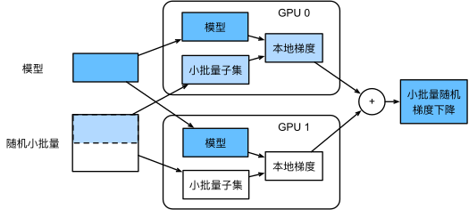

异步计算#
通常每个CPU核有多个线程，每个设备通常有多个GPU，每个GPU有多个处理单元。总之，我们可以同时处理许多不同的事情，并且通常是在不同的设备上。因此在诸多的深度学习框架中，MXNet和TensorFlow之类则采用了一种异步编程（asynchronous programming）模型来提高性能，而PyTorch则使用了Python自己的调度器来实现不同的性能权衡。对PyTorch来说GPU操作在默认情况下是异步的。当调用一个使用GPU的函数时，操作会排队到特定的设备上，但不一定要等到以后才执行。
import os
import subprocess
import numpy
import torch
from torch import nn
from d2l import torch as d2l
通过后端异步处理#
作为热身，考虑一个简单问题：生成一个随机矩阵并将其相乘。让我们在NumPy和PyTorch张量中都这样做，看看它们的区别。请注意，PyTorch的tensor是在GPU上定义的。
# GPU计算热身
device = torch.device(0) #尝试使用GPU
a = torch.randn(size=(1000, 1000), device=device)
b = torch.mm(a, a)
with d2l.Benchmark('numpy'):
for _ in range(10):
a = numpy.random.normal(size=(1000, 1000))
b = numpy.dot(a, a)
with d2l.Benchmark('torch'):
for _ in range(10):
a = torch.randn(size=(1000, 1000), device=device)
b = torch.mm(a, a)
numpy: 0.8221 sec
torch: 0.0017 sec
通过PyTorch的基准输出比较快了几个数量级。NumPy点积是在CPU上执行的，而PyTorch矩阵乘法是在GPU上执行的，后者的速度要快得多。但巨大的时间差距表明一定还有其他原因。默认情况下，GPU操作在PyTorch中是异步的。强制PyTorch在返回之前完成所有计算，这种强制说明了之前发生的情况：计算是由后端执行，而前端将控制权返回给了Python。
使用synchronize语句，等待当前设备上所有流中的所有核心完成，系统就可以在两个设备上自动实现并行计算。
with d2l.Benchmark():
for _ in range(10):
a = torch.randn(size=(1000, 1000), device=device)
b = torch.mm(a, a)
torch.cuda.synchronize(device)
Done: 0.0109 sec
广义上说，PyTorch有一个用于与用户直接交互的前端（例如通过Python），还有一个由系统用来执行计算的后端。如下图所示，用户可以用各种前端语言编写PyTorch程序，如Python和C++。不管使用的前端编程语言是什么，PyTorch程序的执行主要发生在C++实现的后端。由前端语言发出的操作被传递到后端执行。后端管理自己的线程，这些线程不断收集和执行排队的任务。

接下来看看另一个简单例子，以便更好地理解依赖关系图。
x = torch.ones((1, 2), device=device)
y = torch.ones((1, 2), device=device)
z = x * y + 2
z
tensor([[3., 3.]], device='cuda:0')
上面的代码片段在S上图中进行了说明。每当Python前端线程执行前三条语句中的一条语句时，它只是将任务返回到后端队列。当最后一个语句的结果需要被打印出来时，Python前端线程将等待C++后端线程完成变量z的结果计算。这种设计的一个好处是Python前端线程不需要执行实际的计算。因此，不管Python的性能如何，对程序的整体性能几乎没有影响。 下图演示了前端和后端如何交互。
自动并行#
请注意，本节中的实验至少需要两个GPU来运行（直接上kaggle上跑了）
import torch
from d2l import torch as d2l
基于GPU的并行计算#
从定义一个具有参考性的用于测试的工作负载开始：下面的run函数将执行\(10\)次矩阵－矩阵乘法时需要使用的数据分配到两个变量（x_gpu1和x_gpu2）中，这两个变量分别位于选择的不同设备上。
device_1 = torch.device(0)
device_2 = torch.device(1)
def run(x):
return [x.mm(x) for _ in range(50)]
x_gpu1 = torch.rand(size=(4000, 4000), device=device_1)
x_gpu2 = torch.rand(size=(4000, 4000), device=device_2)
现在使用函数来处理数据。通过在测量之前需要预热设备（对设备执行一次传递）来确保缓存的作用不影响最终的结果。torch.cuda.synchronize()函数将会等待一个CUDA设备上的所有流中的所有核心的计算完成。函数接受一个device参数，代表是哪个设备需要同步。如果device参数是None（默认值），它将使用current_device()找出的当前设备。
run(x_gpu1)
run(x_gpu2) # 预热设备
torch.cuda.synchronize(device_1)
torch.cuda.synchronize(device_2)
with d2l.Benchmark('GPU1 time'):
run(x_gpu1)
torch.cuda.synchronize(device_1)
with d2l.Benchmark('GPU2 time'):
run(x_gpu2)
torch.cuda.synchronize(device_2)
GPU1 time: 1.4620 sec
GPU2 time: 1.5126 sec
使用synchronize语句，系统就可以在两个设备上自动实现并行计算
with d2l.Benchmark('GPU1 & GPU2'):
run(x_gpu1)
run(x_gpu2)
torch.cuda.synchronize()
GPU1 & GPU2: 1.4630 sec
并行计算与通信#
在许多情况下，我们需要在不同的设备之间移动数据，比如在CPU和GPU之间，或者在不同的GPU之间
def copy_to_cpu(x, non_blocking=False):
# 将一个列表 x（假设其中包含张量或具有 to() 方法的对象）中的每个元素转移到 CPU 设备上
return [y.to('cpu', non_blocking=non_blocking) for y in x] #non_blocking：一个布尔值，默认为 False。如果设置为 True，并且设备支持，则可以进行非阻塞传输
# 上面函数直观的调用
# x_x = [torch.randn(2, 2).to('cuda'), torch.randn(2, 2).to('cuda')]
# cpu_tensors = copy_to_cpu(x_x)
# print(cpu_tensors)
with d2l.Benchmark('在GPU1上运行'):
y = run(x_gpu1)
torch.cuda.synchronize()
with d2l.Benchmark('复制到CPU'):
y_cpu = copy_to_cpu(y)
torch.cuda.synchronize()
在GPU1上运行: 1.4997 sec
复制到CPU: 2.5216 sec
这种方式效率不高。注意到当列表中的其余部分还在计算时，我们可能就已经开始将y的部分复制到CPU了。
with d2l.Benchmark('在GPU1上运行并复制到CPU'):
y = run(x_gpu1)
y_cpu = copy_to_cpu(y, True)
torch.cuda.synchronize()
在GPU1上运行并复制到CPU: 1.8057 sec
硬件#
关于各个硬件直接的延迟，小结来自Eliot Eshelman，他们将数字的更新版本保存到GitHub gist。
常见延迟。
Action |
Time |
Notes |
|---|---|---|
L1 cache reference/hit |
1.5 ns |
4 cycles |
Floating-point add/mult/FMA |
1.5 ns |
4 cycles |
L2 cache reference/hit |
5 ns |
12 ~ 17 cycles |
Branch mispredict |
6 ns |
15 ~ 20 cycles |
L3 cache hit (unshared cache) |
16 ns |
42 cycles |
L3 cache hit (shared in another core) |
25 ns |
65 cycles |
Mutex lock/unlock |
25 ns |
|
L3 cache hit (modified in another core) |
29 ns |
75 cycles |
L3 cache hit (on a remote CPU socket) |
40 ns |
100 ~ 300 cycles (40 ~ 116 ns) |
QPI hop to a another CPU (per hop) |
40 ns |
|
64MB memory ref. (local CPU) |
46 ns |
TinyMemBench on Broadwell E5-2690v4 |
64MB memory ref. (remote CPU) |
70 ns |
TinyMemBench on Broadwell E5-2690v4 |
256MB memory ref. (local CPU) |
75 ns |
TinyMemBench on Broadwell E5-2690v4 |
Intel Optane random write |
94 ns |
UCSD Non-Volatile Systems Lab |
256MB memory ref. (remote CPU) |
120 ns |
TinyMemBench on Broadwell E5-2690v4 |
Intel Optane random read |
305 ns |
UCSD Non-Volatile Systems Lab |
Send 4KB over 100 Gbps HPC fabric |
1 μs |
MVAPICH2 over Intel Omni-Path |
Compress 1KB with Google Snappy |
3 μs |
|
Send 4KB over 10 Gbps ethernet |
10 μs |
|
Write 4KB randomly to NVMe SSD |
30 μs |
DC P3608 NVMe SSD (QOS 99% is 500μs) |
Transfer 1MB to/from NVLink GPU |
30 μs |
~33GB/s on NVIDIA 40GB NVLink |
Transfer 1MB to/from PCI-E GPU |
80 μs |
~12GB/s on PCIe 3.0 x16 link |
Read 4KB randomly from NVMe SSD |
120 μs |
DC P3608 NVMe SSD (QOS 99%) |
Read 1MB sequentially from NVMe SSD |
208 μs |
~4.8GB/s DC P3608 NVMe SSD |
Write 4KB randomly to SATA SSD |
500 μs |
DC S3510 SATA SSD (QOS 99.9%) |
Read 4KB randomly from SATA SSD |
500 μs |
DC S3510 SATA SSD (QOS 99.9%) |
Round trip within same datacenter |
500 μs |
One-way ping is ~250μs |
Read 1MB sequentially from SATA SSD |
2 ms |
~550MB/s DC S3510 SATA SSD |
Read 1MB sequentially from disk |
5 ms |
~200MB/s server HDD |
Random Disk Access (seek+rotation) |
10 ms |
|
Send packet CA->Netherlands->CA |
150 ms |
NVIDIA Tesla GPU的延迟.
Action |
Time |
Notes |
|---|---|---|
GPU Shared Memory access |
30 ns |
30~90 cycles (bank conflicts add latency) |
GPU Global Memory access |
200 ns |
200~800 cycles |
Launch CUDA kernel on GPU |
10 μs |
Host CPU instructs GPU to start kernel |
Transfer 1MB to/from NVLink GPU |
30 μs |
~33GB/s on NVIDIA 40GB NVLink |
Transfer 1MB to/from PCI-E GPU |
80 μs |
~12GB/s on PCI-Express x16 link |
多GPU训练#
针对AlexNet，在多个GPU上并行化。从左到右：原始问题、网络并行、分层并行、数据并行
下面我们将重点讨论数据并行性。
数据并行性#
假设一台机器有\(k\)个GPU。 给定需要训练的模型，虽然每个GPU上的参数值都是相同且同步的，但是每个GPU都将独立地维护一组完整的模型参数。 例如，下图演示了在\(k=2\)时基于数据并行方法训练模型。
一般来说，\(k\)个GPU并行训练过程如下：
在任何一次训练迭代中，给定的随机的小批量样本都将被分成\(k\)个部分，并均匀地分配到GPU上；
每个GPU根据分配给它的小批量子集，计算模型参数的损失和梯度；
将\(k\)个GPU中的局部梯度聚合，以获得当前小批量的随机梯度；
聚合梯度被重新分发到每个GPU中；
每个GPU使用这个小批量随机梯度，来更新它所维护的完整的模型参数集。
在实践中请注意，当在\(k\)个GPU上训练时，需要扩大小批量的大小为\(k\)的倍数，这样每个GPU都有相同的工作量，就像只在单个GPU上训练一样。 因此，在16-GPU服务器上可以显著地增加小批量数据量的大小，同时可能还需要相应地提高学习率。 下面我们将使用一个简单网络来演示多GPU训练。
%matplotlib inline
import torch
from torch import nn
from torch.nn import functional as F
from d2l import torch as d2l
简单网络#
我们使用（稍加修改的）LeNet， 从零开始定义它，从而详细说明参数交换和同步。
# 初始化模型参数
scale = 0.01
W1 = torch.randn(size=(20, 1, 3, 3)) * scale
b1 = torch.zeros(20)
W2 = torch.randn(size=(50, 20, 5, 5)) * scale
b2 = torch.zeros(50)
W3 = torch.randn(size=(800, 128)) * scale
b3 = torch.zeros(128)
W4 = torch.randn(size=(128, 10)) * scale
b4 = torch.zeros(10)
params = [W1, b1, W2, b2, W3, b3, W4, b4]
# 定义模型
def lenet(X, params):
h1_conv = F.conv2d(input=X, weight=params[0], bias=params[1])
h1_activation = F.relu(h1_conv)
h1 = F.avg_pool2d(input=h1_activation, kernel_size=(2, 2), stride=(2, 2))
h2_conv = F.conv2d(input=h1, weight=params[2], bias=params[3])
h2_activation = F.relu(h2_conv)
h2 = F.avg_pool2d(input=h2_activation, kernel_size=(2, 2), stride=(2, 2))
h2 = h2.reshape(h2.shape[0], -1)
h3_linear = torch.mm(h2, params[4]) + params[5]
h3 = F.relu(h3_linear)
y_hat = torch.mm(h3, params[6]) + params[7]
return y_hat
# 交叉熵损失函数
loss = nn.CrossEntropyLoss(reduction='none')
数据同步#
对于高效的多GPU训练，我们需要两个基本操作。
首先，我们需要向多个设备分发参数并附加梯度（get_params）。
如果没有参数，就不可能在GPU上评估网络。
第二，需要跨多个设备对参数求和，也就是说，需要一个allreduce函数。
def get_params(params, device):
new_params = [p.to(device) for p in params]
for p in new_params:
p.requires_grad_()
return new_params
通过将模型参数复制到一个GPU。
new_params = get_params(params, d2l.try_gpu(0))
print('b1 权重:', new_params[1])
print('b1 梯度:', new_params[1].grad)
b1 权重: tensor([0., 0., 0., 0., 0., 0., 0., 0., 0., 0., 0., 0., 0., 0., 0., 0., 0., 0., 0., 0.],
device='cuda:0', requires_grad=True)
b1 梯度: None
由于还没有进行任何计算，因此权重参数的梯度仍然为零。
假设现在有一个向量分布在多个GPU上，下面的allreduce函数将所有向量相加，并将结果广播给所有GPU。
请注意，我们需要将数据复制到累积结果的设备，才能使函数正常工作。
def allreduce(data):
for i in range(1, len(data)):
data[0][:] += data[i].to(data[0].device)
for i in range(1, len(data)):
data[i][:] = data[0].to(data[i].device)
通过在不同设备上创建具有不同值的向量并聚合它们。
data = [torch.ones((1, 2), device=d2l.try_gpu(i)) * (i + 1) for i in range(2)]
print('allreduce之前：\n', data[0], '\n', data[1])
allreduce(data)
print('allreduce之后：\n', data[0], '\n', data[1])
allreduce之前：
tensor([[1., 1.]], device='cuda:0')
tensor([[2., 2.]], device='cuda:1')
allreduce之后：
tensor([[3., 3.]], device='cuda:0')
tensor([[3., 3.]], device='cuda:1')
数据分发#
我们需要一个简单的工具函数，将一个小批量数据均匀地分布在多个GPU上。 例如，有两个GPU时，我们希望每个GPU可以复制一半的数据。 因为深度学习框架的内置函数编写代码更方便、更简洁，所以在\(4 \times 5\)矩阵上使用它进行尝试。
data = torch.arange(20).reshape(4, 5)
devices = [torch.device('cuda:0'), torch.device('cuda:1')]
split = nn.parallel.scatter(data, devices)
print('input :', data)
print('load into', devices)
print('output:', split)
input : tensor([[ 0, 1, 2, 3, 4],
[ 5, 6, 7, 8, 9],
[10, 11, 12, 13, 14],
[15, 16, 17, 18, 19]])
load into [device(type='cuda', index=0), device(type='cuda', index=1)]
output: (tensor([[0, 1, 2, 3, 4],
[5, 6, 7, 8, 9]], device='cuda:0'), tensor([[10, 11, 12, 13, 14],
[15, 16, 17, 18, 19]], device='cuda:1'))
为了方便以后复用，我们定义了可以同时拆分数据和标签的split_batch函数。
def split_batch(X, y, devices):
"""将X和y拆分到多个设备上"""
assert X.shape[0] == y.shape[0]
return (nn.parallel.scatter(X, devices),
nn.parallel.scatter(y, devices))
训练#
现在我们可以在一个小批量上实现多GPU训练。
在多个GPU之间同步数据将使用刚才讨论的辅助函数allreduce和split_and_load。
我们不需要编写任何特定的代码来实现并行性。
因为计算图在小批量内的设备之间没有任何依赖关系，因此它是“自动地”并行执行。
def train_batch(X, y, device_params, devices, lr):
X_shards, y_shards = split_batch(X, y, devices)
# 在每个GPU上分别计算损失
ls = [loss(lenet(X_shard, device_W), y_shard).sum()
for X_shard, y_shard, device_W in zip(
X_shards, y_shards, device_params)]
for l in ls: # 反向传播在每个GPU上分别执行
l.backward()
# 将每个GPU的所有梯度相加，并将其广播到所有GPU
with torch.no_grad():
for i in range(len(device_params[0])):
allreduce(
[device_params[c][i].grad for c in range(len(devices))])
# 在每个GPU上分别更新模型参数
for param in device_params:
d2l.sgd(param, lr, X.shape[0]) # 在这里，我们使用全尺寸的小批量
现在，我们可以定义训练函数。
与前几章中略有不同：训练函数需要分配GPU并将所有模型参数复制到所有设备。
显然，每个小批量都是使用train_batch函数来处理多个GPU。
我们只在一个GPU上计算模型的精确度，而让其他GPU保持空闲，尽管这是相对低效的，但是使用方便且代码简洁。
def train(num_gpus, batch_size, lr):
#train_iter, test_iter = d2l.load_data_fashion_mnist(batch_size)
import os
from torch.utils.data import Dataset, DataLoader
from torchvision import transforms,datasets
import matplotlib.pyplot as plt
image_size = 28
data_transform = transforms.Compose([
#transforms.ToPILImage(), # 将torch.Tensor或numpy.ndarray类型图像转为PIL.Image类型图像。这段里面可以移除transforms.ToPILImage()，因为 FashionMNIST 数据集已经是 PIL.Image 类型
transforms.Resize(image_size),#按给定尺寸对图像进行缩放
transforms.ToTensor() #将PIL.Image或numpy.ndarray类型图像转为torch.Tensor类型图像
])
# train表示是否是训练集，download表示是否需要下载，transform表示是否需要进行数据变换
train_data = datasets.FashionMNIST(root='../raw/data/', train=True, download=True, transform=data_transform)
test_data = datasets.FashionMNIST(root='../raw/data/', train=False, download=True, transform=data_transform)
#batch_size = 256
num_workers = 0 #mac 不知道为什么变为4也报错 # 对于Windows用户，这里应设置为0，否则会出现多线程错误
# DataLoader是一个用于生成batch数据的迭代器，可以设置batch_size、shuffle、num_workers等参数
#batch_size是指每个批次中包含的样本数量。shuffle=True表示在每个epoch开始时，将训练数据集打乱顺序，以增加模型的泛化能力。num_workers是指用于数据加载的线程数量，可以加快数据加载的速度。drop_last=True表示如果训练数据集的样本数量不能被batch_size整除，最后一个不完整的批次将被丢弃。
train_iter = DataLoader(train_data, batch_size=batch_size, shuffle=True, num_workers=num_workers, drop_last=True)
test_iter = DataLoader(test_data, batch_size=batch_size, shuffle=False, num_workers=num_workers)
devices = [d2l.try_gpu(i) for i in range(num_gpus)]
# 将模型参数复制到num_gpus个GPU
device_params = [get_params(params, d) for d in devices]
num_epochs = 10
animator = d2l.Animator('epoch', 'test acc', xlim=[1, num_epochs])
timer = d2l.Timer()
for epoch in range(num_epochs):
timer.start()
for X, y in train_iter:
# 为单个小批量执行多GPU训练
train_batch(X, y, device_params, devices, lr)
torch.cuda.synchronize()
timer.stop()
# 在GPU0上评估模型
animator.add(epoch + 1, (d2l.evaluate_accuracy_gpu(
lambda x: lenet(x, device_params[0]), test_iter, devices[0]),))
print(f'测试精度：{animator.Y[0][-1]:.2f}，{timer.avg():.1f}秒/轮，'
f'在{str(devices)}')
让我们看看在单个GPU上运行效果得有多好。 首先使用的批量大小是\(256\)，学习率是\(0.2\)。
train(num_gpus=1, batch_size=256, lr=0.2)
测试精度：0.75，3.5秒/轮，在[device(type='cuda', index=0)]
保持批量大小和学习率不变，并增加为2个GPU，我们可以看到测试精度与之前的实验基本相同。 不同的GPU个数在算法寻优方面是相同的。 不幸的是，这里没有任何有意义的加速：模型实在太小了；而且数据集也太小了。在这个数据集中，我们实现的多GPU训练的简单方法受到了巨大的Python开销的影响。 在未来，我们将遇到更复杂的模型和更复杂的并行化方法。
train(num_gpus=2, batch_size=256, lr=0.2)
测试精度：0.84，3.8秒/轮，在[device(type='cuda', index=0), device(type='cuda', index=1)]